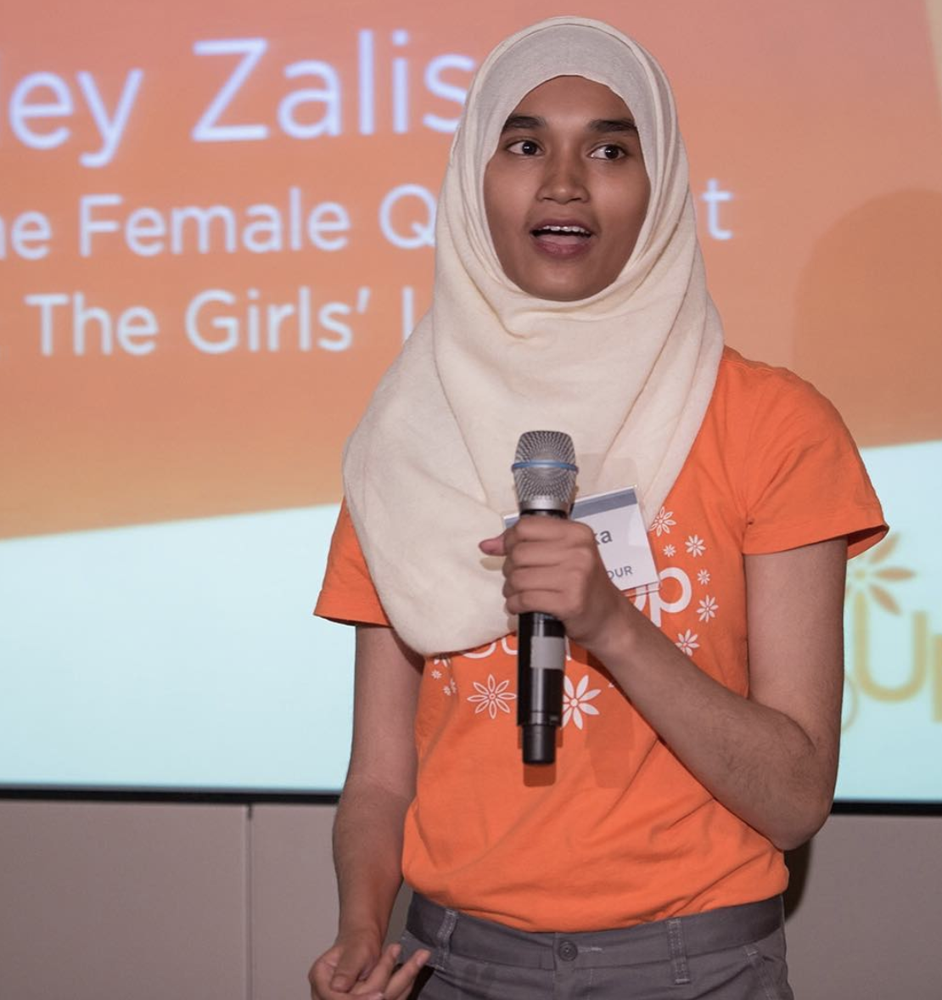
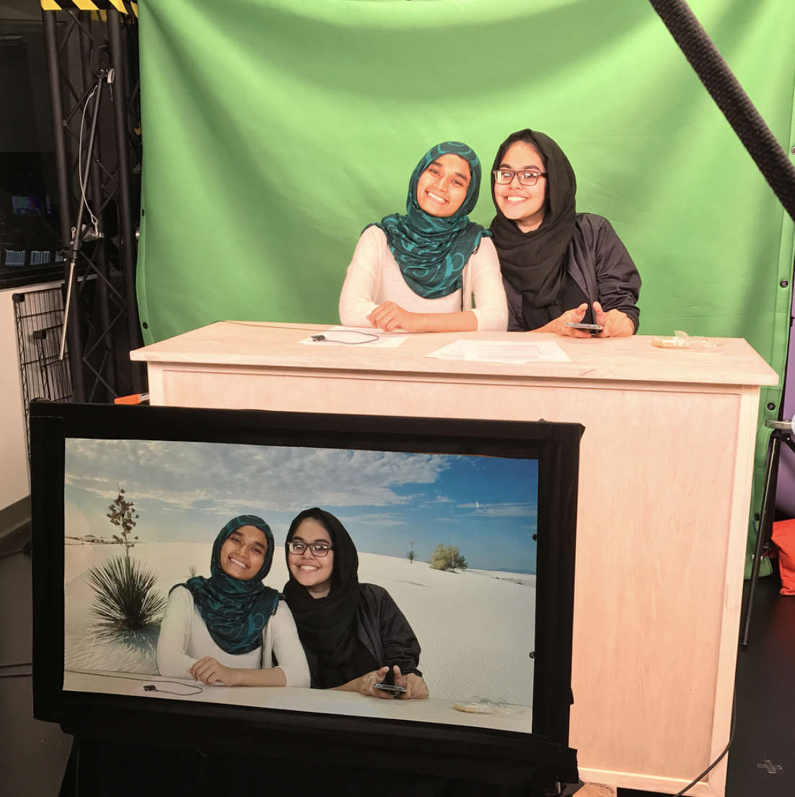
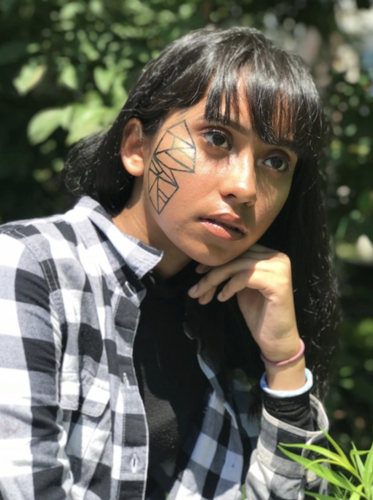
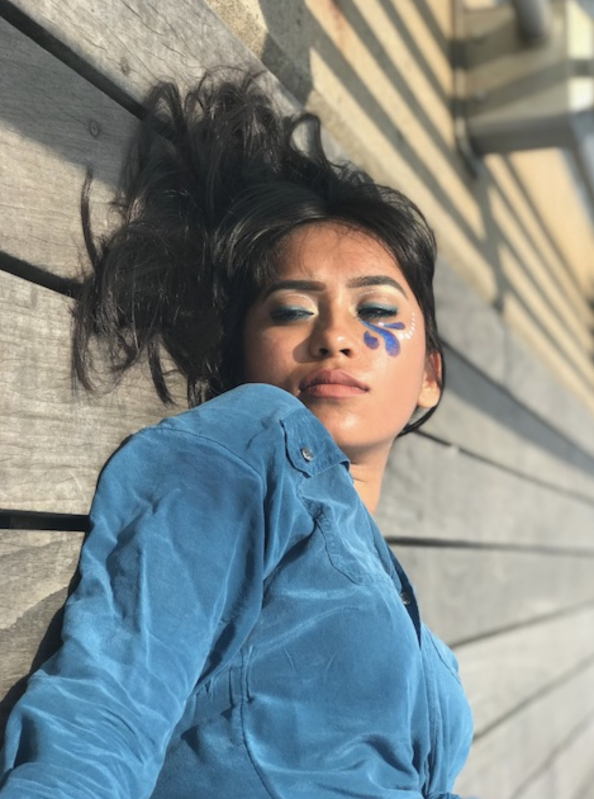
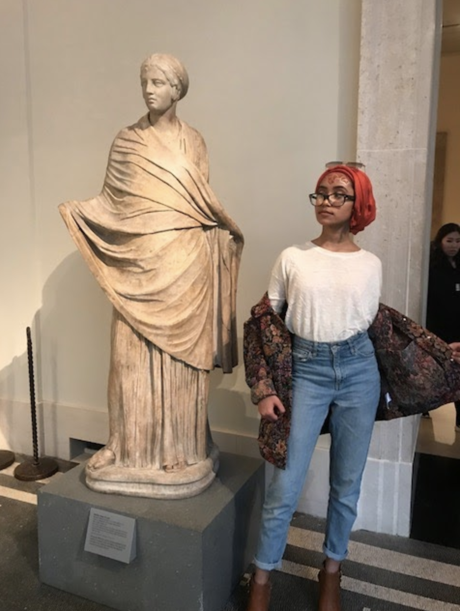
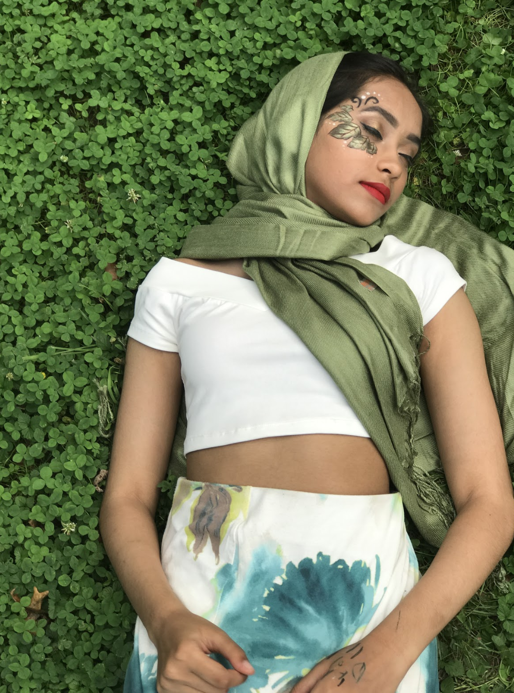

My Gallery
Professional
My exciting experiences with internships and organizations

As a Two Sigma intern, I experimented with the documentation of the Halite AI game, which prompts players to build algorithms to conquer all the planets with their ships. The players are given many options in what kind of program they would like to create algorithms with. All ages can compete locally between schools, countries and companies. If you get on the leaderboard, there are benefits like skipping the initial interview round for a role at Two Sigma. |
|
|

I have been extremely dedicated to Step Up Women's Network for 4+ years now. The organization played a large role in my passion for female empowerment and helped boost my own confidence. I have had the opportunity to meet inspiring women leaders in various industries and feel confident about my own future career. The picture above is of me speaking at the annual Power Hour. |

When I interned at Oath, the parent company to AOL and Yahoo, among other branching brands like Huffington Post, Tumblr and Build. I was able to see employees actively work with technology and production. The picture above is of me trying out the green screen behind the scenes. |
Videos
My ongoing production projects
Photography Art
|
I have combined face art/makeup, environment and photography to build a portfolio of work that represents an array of auras, emotions, manipulation of color and aesthetics. Color, aura and environment is important to me as I move forward in visual storytelling and stimulating empathy. |
|

Butterfly Effect |

Lost at Sea |
|

One Wanderer's Eye |

A Lively Haven |